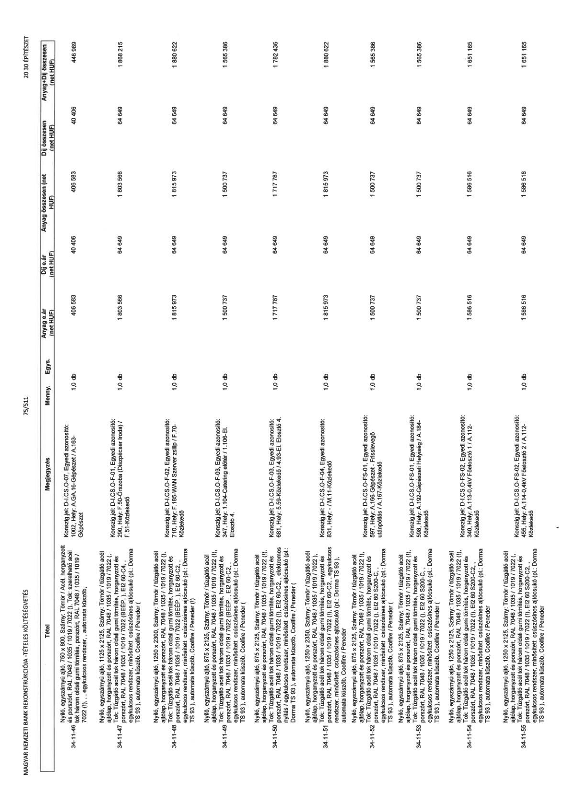

| Tétel | Megjegyzés | Menny. | Egys. | Anyag e.ár (net HUF) | Díj e.ár (net HUF) | Anyag összesen (net HUF) | Díj összesen (net HUF) | Anyag+Díj összesen (net HUF) |
|---|---|---|---|---|---|---|---|---|
| 34-11-46 Nyíló, egyszárnyú ajtó, 750 x 800, Szárny: Tömör / Acél, horganyzott és porszórt, RAL 7048 / 1035 / 1019 / 7022 (!), Tok: szerelhető acél tok három oldali gumi tömítés, porszórt, RAL 7048 / 1035 / 1019 / 7022 (!), „ egykulcsos rendszer, „ automata küszöb, | Konsign.jel: D-I.CS.O-F-01, Egyedi azonosító: 1002, Hely: A.GA.16-Gépészet / A.163-Gépészet | 1,0 | db | 406 583 | 40 406 | 406 583 | 40 406 | 446 989 |
| 34-11-47 Nyíló, egyszárnyú ajtó, 1125 x 2125, Szárny: Tömör / tűzgátló acél ajtólap, horganyzott és porszórt, RAL 7048 / 1035 / 1019 / 7022 (!), Tok: tűzgátló acél tok három oldali gumi tömítés, horganyzott és porszórt, RAL 7048 / 1035 / 1019 / 7022 (BÉÉP.), EI2 60-C4, „ egykulcsos rendszer, minősített csúszósínes ajtócsukó (pl.: Dorma TS 93), automata küszöb, | Konsign.jel: D-I.CS.O-F-01, Egyedi azonosító: 290, Hely: F.50-Őrszoba (Diszpécser iroda) / F.01-Közlekedő | 1,0 | db | 1 803 566 | 64 649 | 1 803 566 | 64 649 | 1 868 215 |
| 34-11-48 Nyíló, egyszárnyú ajtó, 1250 x 2350, Szárny: Tömör / tűzgátló acél ajtólap, horganyzott és porszórt, RAL 7048 / 1035 / 1019 / 7022 (!), Tok: tűzgátló acél tok három oldali gumi tömítés, horganyzott és porszórt, RAL 7048 / 1035 / 1019 / 7022 (BÉÉP.), EI2 60-C2, „ egykulcsos rendszer, minősített csúszósínes ajtócsukó (pl.: Dorma TS 93), automata küszöb, | Konsign.jel: D-I.CS.O-F-02, Egyedi azonosító: 710, Hely: F.185-WAN Szerver zsilip / F.70-Közlekedő | 1,0 | db | 1 815 973 | 64 649 | 1 815 973 | 64 649 | 1 880 622 |
| 34-11-49 Nyíló, egyszárnyú ajtó, 875 x 2125, Szárny: Tömör / tűzgátló acél ajtólap, horganyzott és porszórt, RAL 7048 / 1035 / 1019 / 7022 (1), Tok: tűzgátló acél tok három oldali gumi tömítés, horganyzott és porszórt, RAL 7048 / 1035 / 1019 / 7022 (BÉÉP.), EI2 60-C2, „ egykulcsos rendszer, minősített csúszósínes ajtócsukó (pl.: Dorma TS 93), automata küszöb, | Konsign.jel: D-I.CS.O-F-03, Egyedi azonosító: 347, Hely: 1.104-Catering előtér / 1.106-EL Elosztó 4. | 1,0 | db | 1 500 737 | 64 649 | 1 500 737 | 64 649 | 1 565 386 |
| 34-11-50 Nyíló, egyszárnyú ajtó, 875 x 2125, Szárny: Tömör / tűzgátló acél ajtólap, horganyzott és porszórt, RAL 7048 / 1035 / 1019 / 7022 (1), Tok: tűzgátló acél tok három oldali gumi tömítés, horganyzott és porszórt, RAL 7048 / 1035 / 1019 / 7022 (1), EI2 60-C2, elektromos nyitás / egykulcsos rendszer, minősített csúszósínes ajtócsukó (pl.: Dorma TS 93), automata küszöb, | Konsign.jel: D-I.CS.O-F-03, Egyedi azonosító: 681, Hely: 5.59-Közlekedő / 4.93-El. Elosztó 4. | 1,0 | db | 1 717 787 | 64 649 | 1 717 787 | 64 649 | 1 782 436 |
| 34-11-51 Nyíló, egyszárnyú ajtó, 1250 x 2350, Szárny: Tömör / tűzgátló acél ajtólap, horganyzott és porszórt, RAL 7048 / 1035 / 1019 / 7022 (!), Tok: tűzgátló acél tok három oldali gumi tömítés, horganyzott és porszórt, RAL 7048 / 1035 / 1019 / 7022 (!), EI2 60-C2, „ egykulcsos rendszer, minősített csúszósínes ajtócsukó (pl.: Dorma TS 93), automata küszöb, | Konsign.jel: D-I.CS.O-F-04, Egyedi azonosító: 831, Hely: - / M.11-Közlekedő | 1,0 | db | 1 815 973 | 64 649 | 1 815 973 | 64 649 | 1 880 622 |
| 34-11-52 Nyíló, egyszárnyú ajtó, 875 x 2125, Szárny: Tömör / tűzgátló acél ajtólap, horganyzott és porszórt, RAL 7048 / 1035 / 1019 / 7022 (1), Tok: tűzgátló acél tok három oldali gumi tömítés, horganyzott és porszórt, RAL 7048 / 1035 / 1019 / 7022 (BÉÉP.), EI2 60 S200-C, „ egykulcsos rendszer, minősített csúszósínes ajtócsukó (pl.: Dorma TS 93), automata küszöb, | Konsign.jel: D-I.CS.O-FS-01, Egyedi azonosító: 597, Hely: A.186-Gépészet - Frisslevegő utánpótlás / A.187-Közlekedő | 1,0 | db | 1 500 737 | 64 649 | 1 500 737 | 64 649 | 1 565 386 |
| 34-11-53 Nyíló, egyszárnyú ajtó, 875 x 2125, Szárny: Tömör / tűzgátló acél ajtólap, horganyzott és porszórt, RAL 7048 / 1035 / 1019 / 7022 (1), Tok: tűzgátló acél tok három oldali gumi tömítés, horganyzott és porszórt, RAL 7048 / 1035 / 1019 / 7022 (!), EI2 60 S200-C, „ egykulcsos rendszer, minősített csúszósínes ajtócsukó (pl.: Dorma TS 93), automata küszöb, | Konsign.jel: D-I.CS.O-FS-01, Egyedi azonosító: 598, Hely: A.192-Gépészeti Helyiség / A.184-Közlekedő | 1,0 | db | 1 500 737 | 64 649 | 1 500 737 | 64 649 | 1 565 386 |
| 34-11-54 Nyíló, egyszárnyú ajtó, 1250 x 2125, Szárny: Tömör / tűzgátló acél ajtólap, horganyzott és porszórt, RAL 7048 / 1035 / 1019 / 7022 (!), Tok: tűzgátló acél tok három oldali gumi tömítés, horganyzott és porszórt, RAL 7048 / 1035 / 1019 / 7022 (!), EI2 60 S200-C2, „ egykulcsos rendszer, minősített csúszósínes ajtócsukó (pl.: Dorma TS 93), automata küszöb, | Konsign.jel: D-I.CS.O-FS-02, Egyedi azonosító: 340, Hely: A.115-0,4kV Főelosztó 1 / A.112-Közlekedő | 1,0 | db | 1 586 516 | 64 649 | 1 586 516 | 64 649 | 1 651 165 |
| 34-11-55 Nyíló, egyszárnyú ajtó, 1250 x 2125, Szárny: Tömör / tűzgátló acél ajtólap, horganyzott és porszórt, RAL 7048 / 1035 / 1019 / 7022 (!), Tok: tűzgátló acél tok három oldali gumi tömítés, horganyzott és porszórt, RAL 7048 / 1035 / 1019 / 7022 (!), EI2 60 S200-C2, „ egykulcsos rendszer, minősített csúszósínes ajtócsukó (pl.: Dorma TS 93), automata küszöb, | Konsign.jel: D-I.CS.O-FS-02, Egyedi azonosító: 455, Hely: A.114-0,4kV Főelosztó 2 / A.112-Közlekedő | 1,0 | db | 1 586 516 | 64 649 | 1 586 516 | 64 649 | 1 651 165 |
